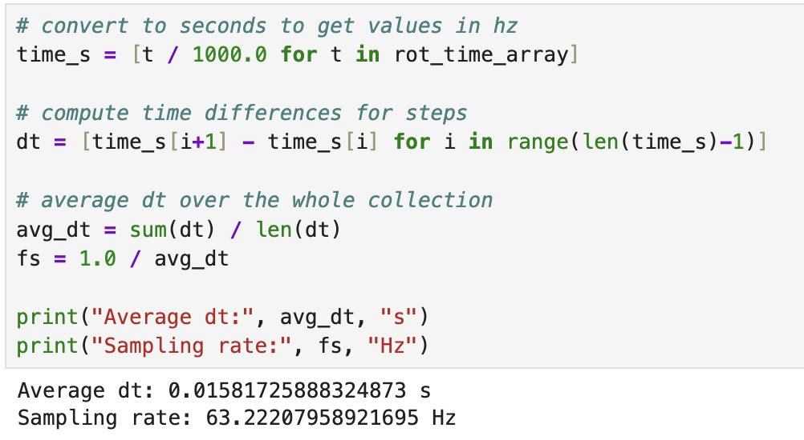
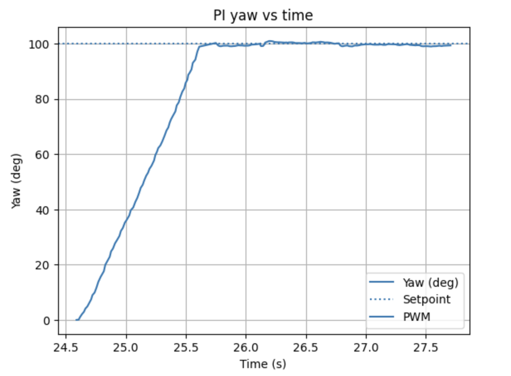

Prelab
Bluetooth Control
Much like Lab 5, I implemented Bluetooth control through a command called ROT_PID. This command takes in a setpoint, KP, KD, KI, max PWM, and min PWM. This made it possible to tune the rotational controller during testing without plugging the robot back into my computer after every trial run. Including the minimum and maximum PWM values in the command gave me additional flexibility during testing, since the robot needed a higher minimum turning value on some surfaces in order to begin rotating (such as the hardwood floor which was my primary test surface), while the maximum value would help to limit slip on smoother floors.
On the Artemis side, I used the robot.command parser to unpack the controller values from a single BLE string and then execute the rotational control loop continuously until a stop command was received. At the end of each trial run, the robot sent recorded data back over Bluetooth through a for loop, including setpoint, time, yaw angle, error, PWM, and controller gains. On the Python side, I used a notification handler to decode the returned string and store the values into arrays for plotting. This made it possible to compare the robot response across different gain values and quickly iterate toward a workable controller. This was mostly done through comparing graph outputs.
Arduino Command Structure
The rotational controller was built around the ROT_PID case, which reads in the command values and starts the control loop. This structure made the testing process much more efficient because all parameters could be adjusted directly from Python.
Lab Tasks
P / I / D Controller Discussion
For Lab 6, the goal was to control robot heading. Instead of using ToF data, I estimated angular position by integrating the z-axis gyroscope reading over time, shown below. This gave an estimate of yaw angle, which could then be compared against a commanded rotational setpoint. The rotational controller used the same overall closed-loop structure as Lab 5, but the measured state was the integrated yaw angle.
float gyro_z_dps = myICM.gyrZ() - gyro_z_bias;
yaw_angle_deg += gyro_z_dps * dt_control;
Through multiple trial runs, I found that the best overall gain set for my robot was KP = 60, KD = 0, and KI = 0.07. In practice, I found that derivative action was not necessary for the rotational task on my setup because the yaw value was already created from the derivative. While the small integral term helped reduce remaining offset in the final heading, and also, to my surprise, aided in increasing the control input if the robot got stuck when I set the minimum rotation value to be too low. The proportional term provided the main turning response, and the integral term helped the robot continue correcting when the yaw error became small near the setpoint. Thus, I ended up with a PI controller which worked effectively for a range of angles I gave it.
I also found that friction mattered much more for turning than they did for the straight-line controller in Lab 5. Because I was testing on hardwood floors, the robot needed a substantially higher minimum turning PWM to begin rotating. I therefore used a minimum PWM value of 120 for the successful run shown here. This ensured that the motors could overcome static friction and start the turn even when the controller output was relatively small.
Sampling Time Discussion
The rotational controller loop was written to run as fast as possible while repeatedly polling Bluetooth to check for commands or a stop command, updating the IMU, integrating the gyroscope reading, and computing a new motor command. Unlike the distance controller from Lab 5, this controller did not depend on the slower ToF sampling rate, so the limiting factor became the IMU update rate and the speed of the loop itself. This allowed for a much more continuous controller response, though it also made careful handling of timing important because the integral term depended directly on the measured loop time.
Sampling Time
My Pi control loop sampled quickly, allowing for quick adjustments especially at high turn rates when the pwm value was high. The below sampling rate was calculated from the run shown below.

Graphs, Code, Video, and Discussion
Rotational PI Arduino Code
The main controller computed yaw error relative to the commanded setpoint and used that value to determine whether the robot should turn left or right. Positive error commanded one turning left and negative error commanded turning right. The command stayed active until the error was sufficiently small (error/setpoint< 0.05) or a stop command was received over Bluetooth.
float error = setpoint - yaw_angle_deg;
float rel_error = error / setpoint;
float derivative = (error - pid_last_error) / dt_control;
integral_error += error * dt_control;
float control = kp * rel_error + ki * integral_error;
int pwm_val = 0;
if (fabs(rel_error) < 0.05f) {
pwm_val = 0;
} else {
pwm_val = (int)fabs(control);
if (pwm_val < min_pwm) pwm_val = min_pwm;
if (pwm_val > max_pwm) pwm_val = max_pwm;
}
if (pwm_val == 0) {
car.kill();
}
else if (error > 0.05f) {
car.tl(pwm_val);
}
else {
car.tr(pwm_val);
}
Yaw vs Time
The primary graph for this lab is the yaw response over time. This plot shows how the integrated angular estimate changes as the robot turns toward the commanded heading. For the recorded trial run shown on this page, I used a setpoint of 100 degrees. This graph is the clearest way to evaluate whether the controller reaches the desired heading smoothly and whether it overshoots before settling.

Discussion of Rotational Response
In the successful runs, the robot was able to turn toward the commanded angle and settle near the desired heading using my PI gain values. The proportional term produced the majority of the turning action, while the small integral term helped continue correcting error as the robot approached the target. Because the minimum turning command had to be raised to 120 on hardwood, the response was somewhat more aggressive near the start of the turn, but it also became much more reliable in actually starting motion.
The main limitation of this approach is that yaw is estimated by integrating gyroscope data, so some drift can be expected especially on longer runs. Thus, I reset the controller between runs by pressing reset on the Artemis. However, for a moderate rotational target like 100 degrees, the controller was able to meet the setpoint well enough to demonstrate workable rotational feedback control. Overall, the experiment showed that the same closed-loop controller structure from Lab 5 could be extended effectively to angular control in Lab 6.
Controller Performance Video
The video below corresponds to the same run shown in the yaw versus time graph. The recorded run used a setpoint of 100 degrees and demonstrates the robot rotating to the commanded heading under PI control.
References
For this lab I worked with Coby Lai extensively when I was stuck on my initial loop. I also used AI assistance to check syntax and help debug portions of the Arduino and Python code.